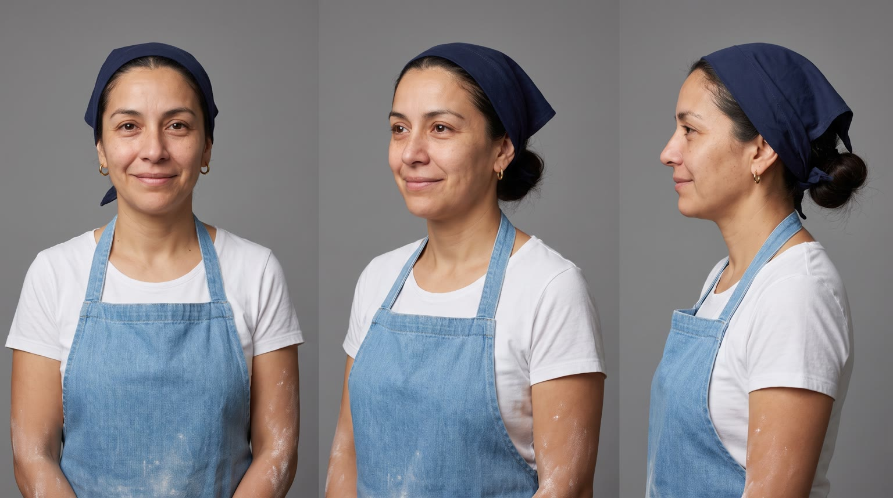
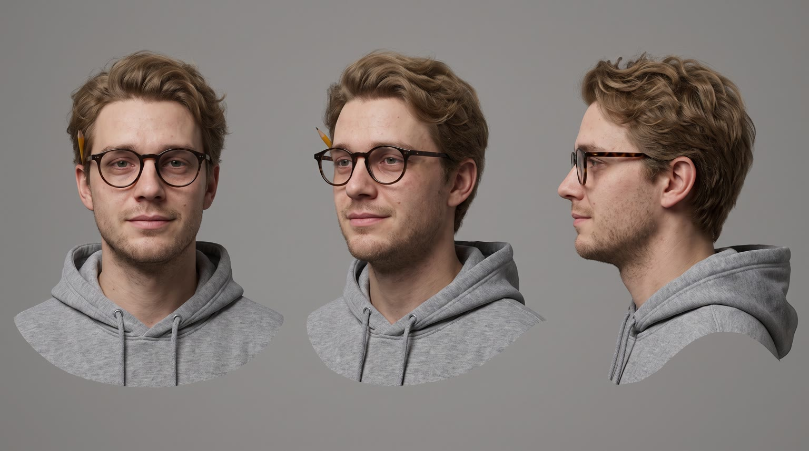
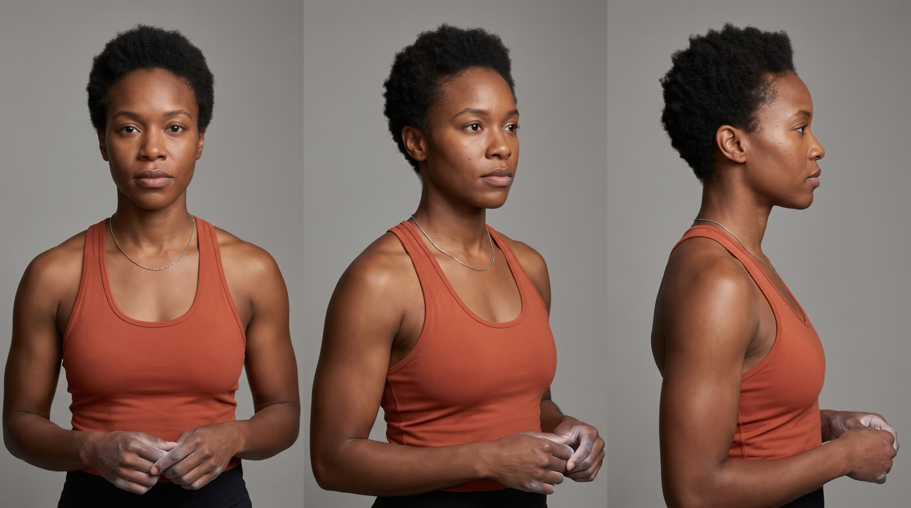
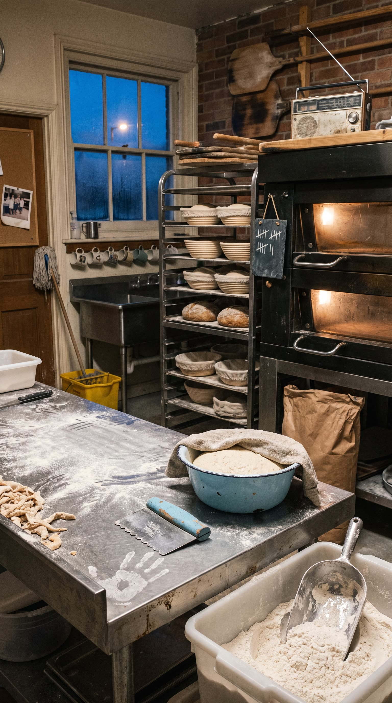
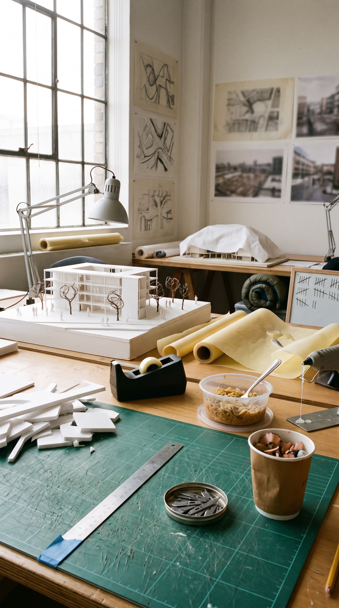
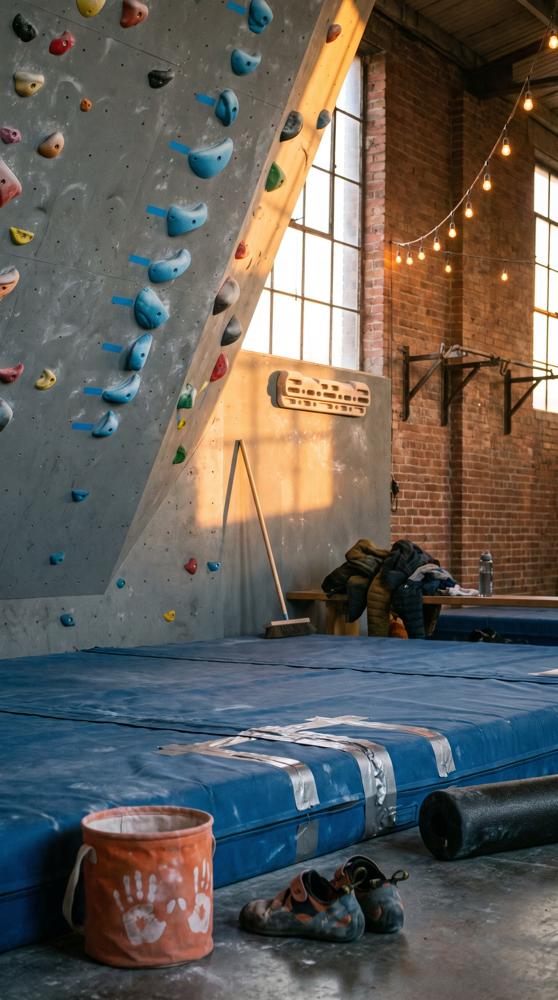
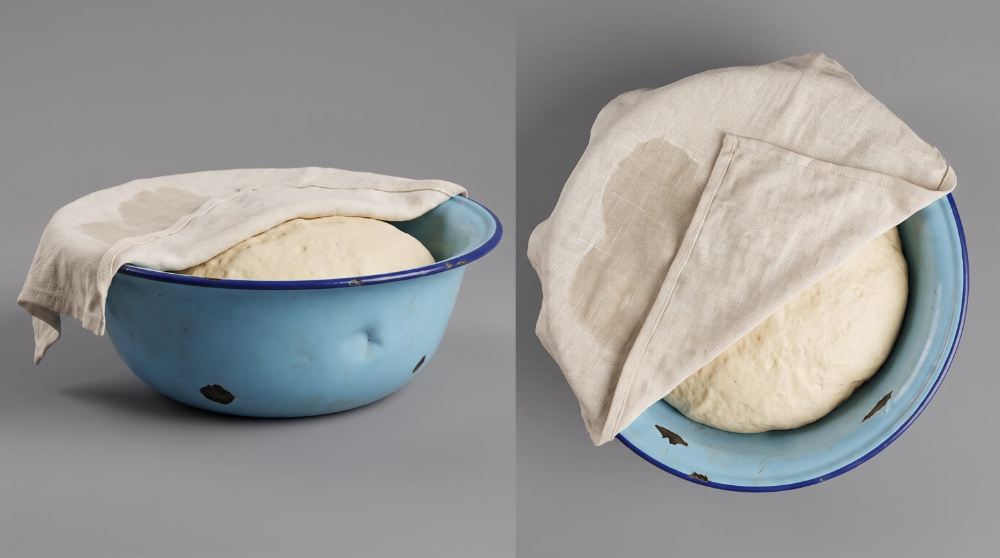
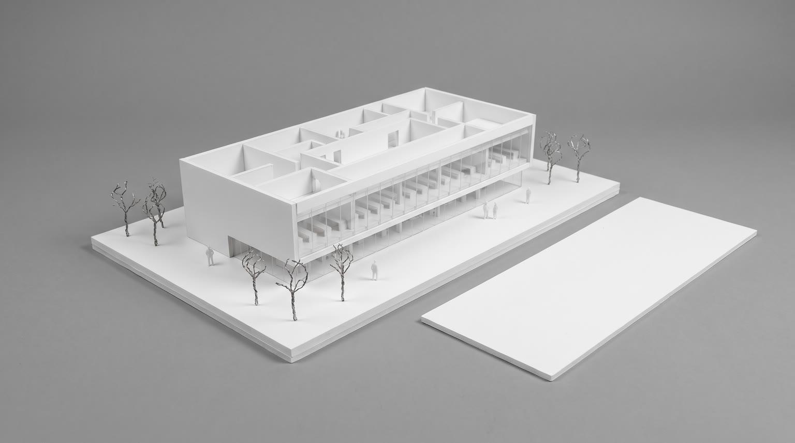
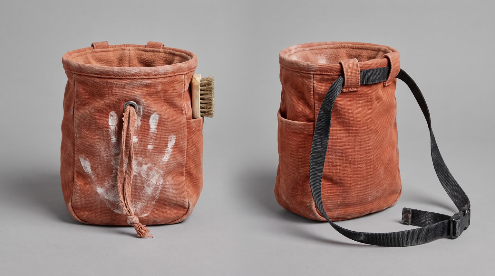

All templates · template.json · original storyboard
Lifestyle montagelifestyle_montage-01-the-wallThe Wall
Three people, one day, three walls: a baker at 5am, an architecture student at 2pm, a climber at 7pm. Each hits theirs, each reaches for {{product.name}}, each gets over it, all cut to one beat.
Fit by product type
| ingested | great | the reach at the wall is a natural moment for a beverage or a snack |
| applied | good | lip balm at the bench, hand cream at the desk, chalk balm or sunscreen at the gym |
| worn | good | headphones, glasses, a jacket or shoes put on to get over the wall; the bakery macro needs a clean corner of the bench |
| handheld | great | earbuds, a pen, a bottle or a gadget picked up at each wall |
| carried | good | a bag or case opened at each wall |
| home | stretch | each beat moves to a lounge or break corner in that location; works for chairs, lamps, speakers, kettles, small sofas, not beds or large appliances |
| consumable | good | a pack or refill each person reaches for |
Refuses: products for children; alcohol; products that cannot plausibly help with a tiring moment (the montage promises getting over a wall); beds and large appliances
Cast, world and props (shipped with the template)









- Hearth and Rye opened in 2019 in a former laundromat on Calder Street. Marisol bought it from her old boss with a 60 thousand dollar loan, and on Tuesdays she bakes all 140 loaves alone before the 7am open.
- Theo is a fourth-year architecture student. His thesis model, a 1 to 200 scale public library for his hometown in northern Minnesota, is due at the 4pm crit and at 2pm it still has no roof. He has been awake for 26 hours.
- Keisha took up bouldering after her divorce three years ago. The sky-blue problem on the big overhang, which the regulars call the Blue Line, has beaten her 23 times.
- Kestrel Bouldering is a converted 1920s brick rail warehouse. The setters strip and reset the overhang every Wednesday morning, so tonight is her last chance at the Blue Line.
- All three live within a mile of each other in Calder Heights and never meet; the rooftop at the end is the view all three of them share.
Script: what each line must do
Right column is the worked example for Red Bull Sugarfree.
| Time | Speaker | Intent (template) | Example |
|---|---|---|---|
| 0.2-1.8 | keisha (off camera) | Fixed: Every day has a wall. Max 5 words. Delivery: dry, close, a knowing half-smile, in the gap before the kick drum | Every day has a wall. |
| 2.3-3.2 | keisha (off camera) | Fixed: Early shift. Max 2 words. Delivery: flat, on the beat, like a caption read aloud | Early shift. |
| 4.3-5.0 | keisha (off camera) | Fixed: Deadline. Max 1 words. Delivery: flat, on the beat | Deadline. |
| 6.3-7.1 | keisha (off camera) | Fixed: Last set. Max 2 words. Delivery: a touch warmer, she is talking about herself | Last set. |
| 8.4-9.8 | keisha (off camera) | Product line: say {{product.name}} alone, in the silence after the music cuts. the name only, as written; brand spelled with product.phonetic in the TTS script Max 5 words. Delivery: clear and unhurried in the silence, right after the product's own sound | Red Bull Sugarfree. |
| 10.2-11.8 | keisha (off camera) | The one benefit from product.benefits that gets someone over their wall (focus, comfort, grip, warmth, calm, energy...), said as two short plain phrases. benefit only from product.benefits, reworded no further than person and tense; no numbers unless the page states them Max 6 words. Delivery: matter-of-fact, landing the last phrase just before the drop | Helps you concentrate. No sugar. |
| 20.4-22.0 | keisha (off camera) | Fixed: Whatever your wall is, Max 4 words. Delivery: breathing a little from the climb, warm | Whatever your wall is, |
| 24.6-25.6 | keisha (off camera) | Fixed: get over it. Max 3 words. Delivery: playful, a smile in the voice | get over it. |
| 27.4-29.2 | keisha (off camera) | Tagline: product.tagline if the page has one, otherwise a 3 to 5 word line about getting over it. Max 6 words. Delivery: warm, unhurried, over the last held chord | Wiiings without sugar. |
Product-adjacent props by type
| ingested | a steel prep tray at the clean end of Marisol's bench, a desk corner cleared of foam offcuts for Theo, the edge of Keisha's crash mat: where each of them keeps a chilled one |
| applied | the clean end of the bench by the sink, the desk beside the glue gun, Keisha's open gym bag by the mats: where each keeps the product |
| worn | a hook by the bakery door, the back of Theo's studio chair, the bench by the gym cubbies: where each one's product waits |
| handheld | the shelf above the bakery sink, the desk beside the silver lamp, the chalk bucket ledge: where each one's product rests |
| carried | the product hanging on the bakery door hook, slung on Theo's chair back, dropped by the gym cubbies |
| home | the bakery's small break corner behind the proofing racks, the old studio couch corner, the gym's front lounge corner by the mats: where the product is set up |
| consumable | a pack of the product on the bakery shelf, in Theo's desk drawer, in Keisha's gym bag pocket |
Shots and how the product appears for each type
S01 · 0 to 2 s · absent
Marisol's floury hands slam a ball of dough flat on the steel bench; a burst of flour lifts through the blue dawn window light.
S02 · 2 to 4 s · absent
Marisol leans both hands on the bench, eyes closing, a yawn she cannot stop; the oven glows behind her.
S03 · 4 to 6 s · absent
Theo slumps with his forehead on the desk beside a half-built white foam model, pencil still behind his ear, bright afternoon light.
S04 · 6 to 8 s · absent
Keisha stands on the crash mat, chalking her hands, staring up at the steep overhanging wall that has beaten her all night.
S05 · 8 to 10 s · hero
In the silence after the music cuts, Marisol's floury fingers bring out the product on the steel bench; flour dust hangs in the dawn light.
| ingested | {{product.visual}} standing upright on the floured steel bench, label facing camera, straight and undistorted, the small slender hand of a woman with short nails and flour dust on her knuckles opening it, a small puff of cold vapour or a curl of aroma rising |
| applied | {{product.visual}} standing upright on the floured steel bench, label facing camera, straight and undistorted, the small slender hand of a woman with short nails and flour dust on her knuckles flipping open its cap |
| worn | {{product.visual}} set neatly on a clean, flour-free corner of the steel bench, best side to camera, the small slender hand of a woman with short nails and flour dust on her knuckles lifting it by one edge |
| handheld | {{product.visual}} lying on a clean, flour-free corner of the steel bench, logo to camera, the small slender hand of a woman with short nails and flour dust on her knuckles picking it up |
| carried | {{product.visual}} on a clean, flour-free corner of the steel bench, logo to camera, the small slender hand of a woman with short nails and flour dust on her knuckles pulling open its zip or clasp |
| home | {{product.visual}} set up in the bakery's small break corner behind the proofing racks, best side to camera, the small slender hand of a woman with short nails and flour dust on her knuckles switching it on or pressing into it |
| consumable | a pack of {{product.visual}} on a clean, flour-free corner of the steel bench, label to camera, the small slender hand of a woman with short nails and flour dust on her knuckles taking one out |
S06 · 10 to 12 s · in_use
Theo, head up now, uses the product at the desk, eyes already back on the model.
| ingested | holding {{product.visual}} at chest height just after having some, label facing camera and undistorted |
| applied | holding {{product.visual}} at chest height just after applying a little to his hands, label facing camera and undistorted |
| worn | wearing {{product.visual}}, adjusting it once with one hand, its best side to camera |
| handheld | using {{product.visual}} for a moment, then holding it at chest height with the logo facing camera |
| carried | with {{product.visual}} open on the desk beside him, one hand still resting on it after taking out what he needed, logo to camera |
| home | settled into or beside {{product.visual}}, set up at the end of the studio desk, his posture straightening |
| consumable | holding the pack of {{product.visual}} at chest height just after using one, label facing camera and undistorted |
S07 · 12 to 14 s · absent
The drop: Marisol pulls a tray of golden loaves out of the deck oven; the window behind her has gone from blue to first sunrise gold.
S08 · 14 to 16 s · absent
Theo sets the last white roof piece onto the foam model with tweezers and it clicks into place; he pushes his glasses up.
S09 · 16 to 20 s · absent
Keisha makes the final dynamic reach on the overhang and slaps the top hold; a cloud of chalk bursts off her hand into the sunset beams.
S10 · 20 to 24 s · in_use
Keisha sits on the crash mat, breathing hard, the product with her, grinning up at the wall she just beat.
| ingested | holding {{product.visual}} loosely in one chalky hand on her knee, label facing camera and undistorted |
| applied | just finished applying a little of {{product.visual}} where it is meant to go (hands, lips or face), the product now held on her knee in one chalky hand with the label facing camera |
| worn | wearing {{product.visual}}, one chalky hand touching it, its best side to camera |
| handheld | holding {{product.visual}} loosely in one chalky hand on her knee, logo facing camera and undistorted |
| carried | with {{product.visual}} on the mat beside her, one chalky hand resting on it, logo facing camera |
| home | sitting beside {{product.visual}}, set up in the gym's small lounge corner at the edge of the mats, one chalky hand resting on it |
| consumable | holding the pack of {{product.visual}} in one chalky hand on her knee, label facing camera and undistorted |
S11 · 24 to 30 s · hero
Blue hour on a rooftop: the product sits at the ledge as city windows light up behind it. Tagline and pack shot.
| ingested | {{product.visual}} standing upright on a weathered concrete rooftop ledge, label facing camera and undistorted, cold droplets catching the last warm light |
| applied | {{product.visual}} standing upright on a weathered concrete rooftop ledge, label facing camera and undistorted, catching the last warm light |
| worn | {{product.visual}} laid neatly on a weathered concrete rooftop ledge, its best side to camera, catching the last warm light |
| handheld | {{product.visual}} resting on a weathered concrete rooftop ledge, logo facing camera, catching the last warm light |
| carried | {{product.visual}} standing on a weathered concrete rooftop ledge, logo facing camera, catching the last warm light |
| home | {{product.visual}} set on the rooftop deck just behind the weathered concrete ledge, its best side to camera, catching the last warm light |
| consumable | the pack of {{product.visual}} standing upright on a weathered concrete rooftop ledge, label facing camera, catching the last warm light |
Generation units (templated prompts)
U1 · 9 s
9:16 candid lifestyle montage, documentary handheld, natural light, light 16mm grain, four shots, hard cuts exactly every 2 seconds. Shot 1 (0 to 2 s): close-up of the floury hands of @Image1 (Marisol, navy bandana, sky-blue denim apron) slamming dough flat on a steel bakery bench before dawn, a burst of flour through blue window light. Shot 2 (2 to 4 s): medium shot of @Image1 leaning on the bench, eyes closing, a yawn she cannot stop, orange oven glow behind. Shot 3 (4 to 6 s): medium shot of @Image2 (Theo, round tortoiseshell glasses, grey hoodie) dropping his forehead onto a desk beside a half-built plain white foam architecture model in bright afternoon light. Shot 4 (6 to 9 s): from slightly behind and below, @Image3 (Keisha, short natural coils, burnt-orange tank top) claps chalk off her hands and looks up at a tall overhanging climbing wall in amber sunset light; the wall is vertical, normal gravity. Each person appears only in their own shots. Unposed, nobody looks at the camera. Native sound: dough slap, oven hum, a thud, a chalk clap. No music, no dialogue, no text on screen, no logos.
U2 · 5 s · exact-risk
9:16 candid lifestyle. Shot 1 (0 to 2 s): locked-off macro on a floured steel bakery bench in blue dawn light, {{action.S05}}; the product matches @Image1 exactly, straight and undistorted. Shot 2 (2 to 5 s): medium close-up of @Image2 (Theo) at a bright studio desk, {{action.S06}}, eyes already on his white foam model, a hint of a smile. One product per person. Keep the product's shape, colours and label exactly as @Image1. Native sound: the product's own opening or use sound, studio murmur. No music, no dialogue, no text on screen.U3 · 12 s
9:16 candid lifestyle montage, energetic handheld, cuts on the beat. Shot 1 (0 to 2 s): @Image1 (Marisol) pulls a wooden peel of golden loaves out of a glowing deck oven, steam, the bakery window now sunrise gold, she is grinning. Shot 2 (2 to 4 s): close-up, @Image2 (Theo) places the final white roof piece on a plain white foam model with tweezers, it clicks in, he pushes up his glasses. Shot 3 (4 to 8 s): low angle up a tall overhanging climbing wall at sunset, @Image3 (Keisha) makes a final dynamic reach and slaps a big sky-blue top hold, a cloud of chalk bursts off her hand into the light beams; she hangs by her hands, normal gravity, the wall stays vertical. Shot 4 (8 to 12 s): @Image3 sits on a blue crash mat breathing hard, {{action.S10}}, grinning up at the wall; the product matches @Image4. Each person appears only in their own shots. Native sound: oven door, a click, a slap and a shout of effort, breathing. No music, no dialogue, no text on screen, no logos.U4 · 6 s · exact-risk
9:16 premium pack shot at blue hour. Slow gimbal push-in on {{action.S11}}, the product matching @Image1 exactly, in the lower third; behind it a blurred generic skyline of plain towers whose windows light up one by one, no signs or landmarks, deep blue sky with a gold band on the horizon. The product does not move or change shape. Keep clean empty sky above the product. Native sound: distant city, a breeze. No music, no dialogue, no text.